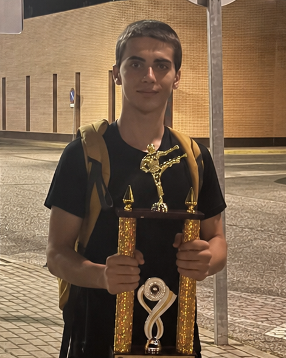
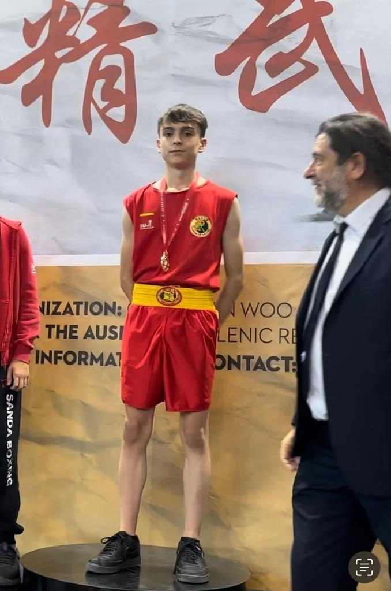

<section class="noticias">

<article>
<h3>🥋 Quiénes somos</h3>

<p>
La Familia Lurueña representa una trayectoria dedicada
al estudio, práctica y enseñanza de las artes marciales.

Conoce la historia, formación y experiencia de nuestros miembros de la familia.
</p>

<article id="quienes-somos">
  <h3>🥋 Los cinco luchadores de la Familia Lurueña</h3>

  <p>
    La Familia Lurueña representa una trayectoria dedicada
    al estudio, la práctica y la enseñanza de las artes marciales.
    Conoce a los cinco luchadores que forman parte de nuestra familia.
  </p>

  <div class="luchadores">

    <div class="luchador">
      
      <h4>César Lurueña</h4>
    </div>

    <div class="luchador">
      
      <h4>Eduardo Lurueña</h4>
    </div>

    <div class="luchador">
      
      <h4>Fernando Lurueña</h4>
    </div>

    <div class="luchador">
      
      <h4>Víctor Lurueña</h4>
    </div>

    <div class="luchador">
      
      <h4>Yoel Lurueña</h4>
    </div>

  </div>
</article>
